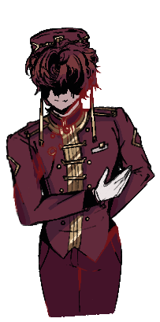

← HALLWAY
Room 03 · Paranormal Paralegal
·
Esc = back
Paranormal
Paralegal
select difficulty
Easy
3 pages
Medium
4 pages
Hard
5 pages
Case of the Day
Detective's Backlog
Party Mode
Back to Hallway

John D'Brief
Skip debrief ▶▶
Next ▶
(Enter)
← Cover
Replay debrief
◀
CASE FILE
click to open
CASE
CLOSED
click to see your breakdown
Share
Back to Hallway
[dev] reset today's case
CASE FILE
▶
Your breakdown
Close